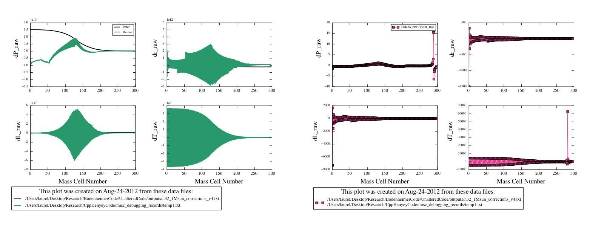

Date & Time: Aug. 24, 2012
Location: campus
Computing context: MachoMac
(/Desktop/Research/CppHenyeyCode/src, /Desktop/Research/BodenheimerCode/UnalteredCode)
From last time:
Hints from Greg: Numerical recipes, ill-conditioned matrices (NR apparently has info on how to finess those), "pre-conditioning" a matrix, singular value decomposition?? (may only be worth it for matrices larger than 4x4, but worth keeping in mind)
It looks like the limiting factor in getting the codes dX values to agree lies NOT with the S matrices or their inversions, but with the CDEG values that Helena is calculating.
Specifically, the G4J and related CDE values are all messed up. This is not the only problem, but it is the biggest one.
To Do Today:
Write up what I figured out last time about why my G4J values are so different from Peter's. Done-- see /Users/laurel/Desktop/desktopLabNotebook/2012/August/Aug_24_2012/G4J_manifesto.pdf.
Now, I'd really like to get an html version of this write-up created so I can include the contents directly in the wordpress blog write-up for today. I will come back to this later in the afternoon, though, because my initial research on doing this makes it look like it's not totally straight-forward to do.
Make the appropriate revisions to Helena's G4J calculation subroutine. Done, but now I'm getting some wonky results out of my code. See Figure 1 for details.

Figure
1
Update the wordpress blog.
To keep in mind for later:
For the 1 Mjup model: do the Peter and Helena models' dX values (raw) now agree, too?